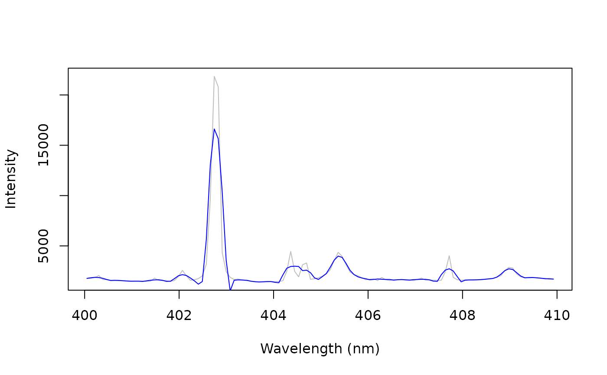

Smooths spectra, or computes their first or second derivative, with the
Savitzky-Golay filter: a polynomial of degree order fitted by least
squares in a moving window of window channels.
Arguments
- x
A numeric matrix or data frame of spectra, one per row, or a numeric vector (one spectrum). Their names are the wavelengths.
- window
The width of the window, an odd number of channels. Default is 11.
- order
The degree of the polynomial, smaller than
window. Default is 2.- derivative
The derivative: 0 (smoothing, default), 1 or 2. It must not exceed
order.- segments
A logical: filter the segments between gaps of the wavelength axis separately (
TRUE, default). Needs wavelengths as names.
Details
Smoothing reduces noise, at the cost of broadening narrow lines when the
window is wide compared with the line width (a higher order preserves
the line shape better, and smooths less). Derivatives remove constant
(first derivative) or linear (second derivative) baselines and separate
overlapping features, but amplify noise, which the polynomial fit
counteracts.
Every channel is kept: at the ends of a spectrum, the values come from
the polynomial fitted to the first (or last) window channels. When
segments = TRUE, the spectrum is split between the detectors of a
multi-spectrometer system (where the wavelengths step back, or jump by
more than 5 times the median spacing), and each segment is filtered on
its own; segments shorter than window are returned as NA, with a
warning.
Derivatives are per channel. For derivatives per nm, divide the first derivative by the channel spacing (and the second by its square).
References
Savitzky, A., Golay, M.J.E. (1964). Smoothing and differentiation of data by simplified least squares procedures. Analytical Chemistry, 36(8):1627-1639.
Rinnan, A., van den Berg, F., Engelsen, S.B. (2009). Review of the most common pre-processing techniques for near-infrared spectra. Trends in Analytical Chemistry, 28(10):1201-1222.
Examples
data(forageLIBS)
spectrum <- unlist(forageLIBS[1, -(1:14)])
smooth <- savitzky_golay(spectrum, window = 7)
first <- savitzky_golay(spectrum, window = 11, derivative = 1)
wl <- as.numeric(names(spectrum))
keep <- wl > 400 & wl < 410
plot(wl[keep], spectrum[keep], type = "l", col = "grey", xlab = "Wavelength (nm)",
ylab = "Intensity")
lines(wl[keep], smooth[keep], col = "blue")
